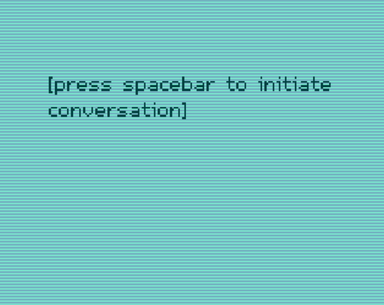

| Status | Finished |
| Year | 2019 |
| Genre | Interactive Monologue |
| Engine | Clickteam Fusion 2.5 |
a monologue about dreams isn’t as much a game as it is an interactive monologue. The idea for it was birthed from the thought that I couldn’t name many games that make the players contemplate and reflect on things. The monologue is about a personal struggle I had at the time I made this, and it’s accompanied by an ambient-inspired music track playing in the background.